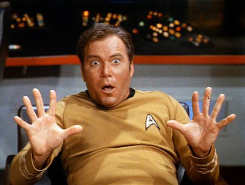
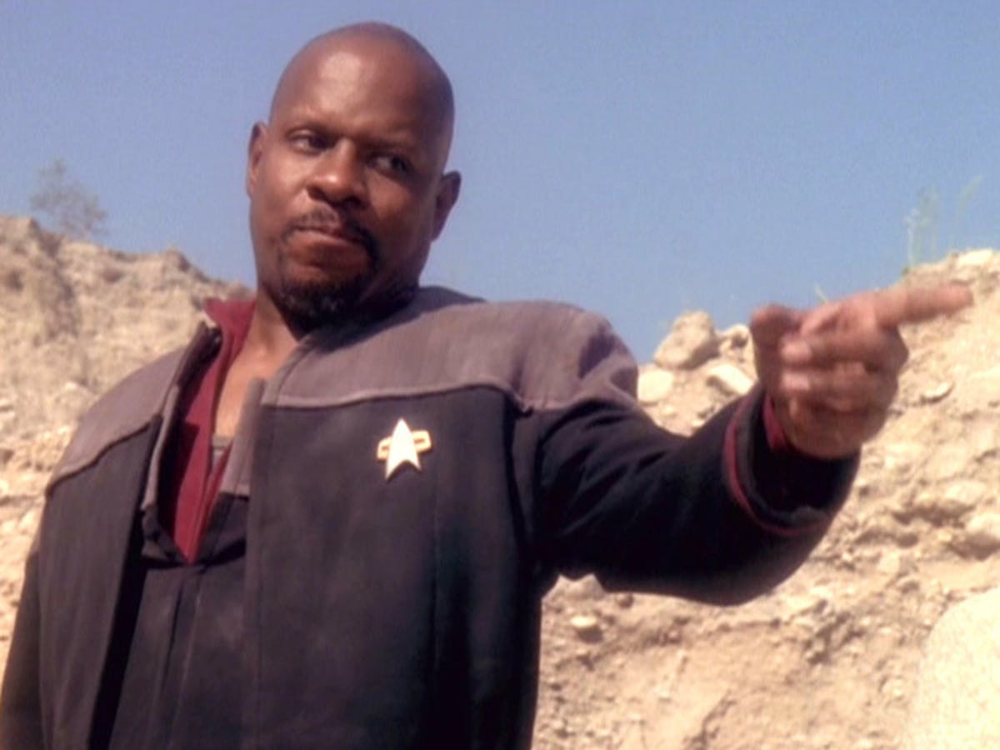

The Next Generation

Star Trek: The Next Generation (TNG and ST:TNG) is an American science fiction television series created by Gene Roddenberry. It originally aired from September 28, 1987 to May 23, 1994 on syndication, spanning 178 episodes over the course of seven seasons. The third series in the Star Trek franchise, it is the second sequel to Star Trek: The Original Series. Set in the 24th century, when Earth is part of a United Federation of Planets, it follows the adventures of a Starfleet starship, the USS Enterprise-D, in its exploration of the Milky Way galaxy.
Original Series
Star Trek is an American science fiction television series created by Gene Roddenberry that follows the adventures of the starship USS Enterprise (NCC-1701) and its crew. It later acquired the retronym of Star Trek: The Original Series (TOS) to distinguish the show within the media franchise that it began.
The show is set in the Milky Way galaxy, roughly during the 2260s. The ship and crew are led by Captain James T. Kirk (William Shatner), First Officer and Science Officer Spock (Leonard Nimoy), and Chief Medical Officer Leonard McCoy (DeForest Kelley). Shatner's voice-over introduction during each episode's opening credits stated the starship's purpose:
Deep Space 9
Star Trek: Deep Space Nine (DS9) is an American science fiction television series created by Rick Berman and Michael Piller. It originally aired from January 3, 1993, to June 2, 1999, in syndication, spanning 176 episodes over seven seasons. The fourth series in the Star Trek franchise, it served as the third sequel to Star Trek: The Original Series. Set in the 24th century, when Earth is part of a United Federation of Planets, it is based on the eponymous space station Deep Space Nine, located adjacent to a wormhole connecting Federation territory to the Gamma Quadrant on the far side of the Milky Way galaxy.